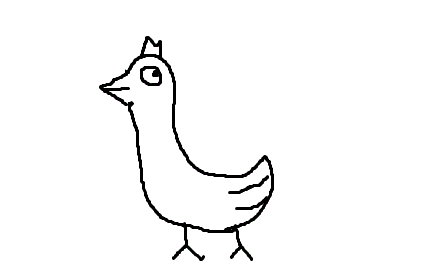

顎口上綱硬骨魚綱条鰭亜綱新鰭区刺鰭上目スズキ系フグ目モンガラカワハギ亜目ギマ科ギマ属....
要する美味しいフグやカワハギの仲間である。
そんなギマの最大の特徴は.........
「立つ」ことができる
圧倒的、そして芸術的フォルムの持ち主である。
そんなすばらしいフォルムに驚嘆の声があがっている。
う～ん、生まれ変わったらギマになりたい！！！＞
＜こ...これこそが真の芸術...！！
そんなギマの素晴らしいフォルムが故、様々な企業でもギマが採用されている。
・目の付けどころが、ギマでしょ。
・そうだ、ギマ 行こう。
・「お、ねだん以上。」ギマ
・ギマータ♪ギマータ♪
・ギマも満タンに
・ひとの ギマを、想う。
さらに世界の偉人も沢山の名言を遺している。
・立たぬなら、殺してしまえ、ギマ
・Government of the GIMA, by the GIMA, for the GIMA
・精神的に向上心のないやつはギマだ。
・ギマは投げられた。
・人は考えるギマである。
さらには、ギマに関する様々な都市伝説もあがっている。
無論、「信じるか信じないかは、ギマ次第。」である。
・普段、皆が食べている「アン肝」というのは、実は「ギマ肝」である。
・実はかまたんは、「梨と野菜の妖精」ではなく、「梨と野菜のギマ」である。
・株式会社オリエンタルランドが次に考えているキャラクターのモチーフはギマである。
・謎の秘密結社フリーメイソンのメンバーは自分が組織のメンバーだと悟られないようにするため、
仲間同士では、組織を「ギマ」と呼んでいる。
・なのでフリーメイソンは、この頃水族館でちやほやされているチンアナゴに敵意を抱いており、
世界中の水族館のチンアナゴコーナーをギマコーナーにしようと考えている。
・ダーウィンの進化論は実は間違っており、人間の祖先はギマである。
・NASAは公表していないが、火星には液体の水と一緒にギマが見つかっている。
そんな素晴らしいギマにはまだまだ沢山の謎と魅力がある。
そんなギマの謎と魅力をもっと知りたい方は↓